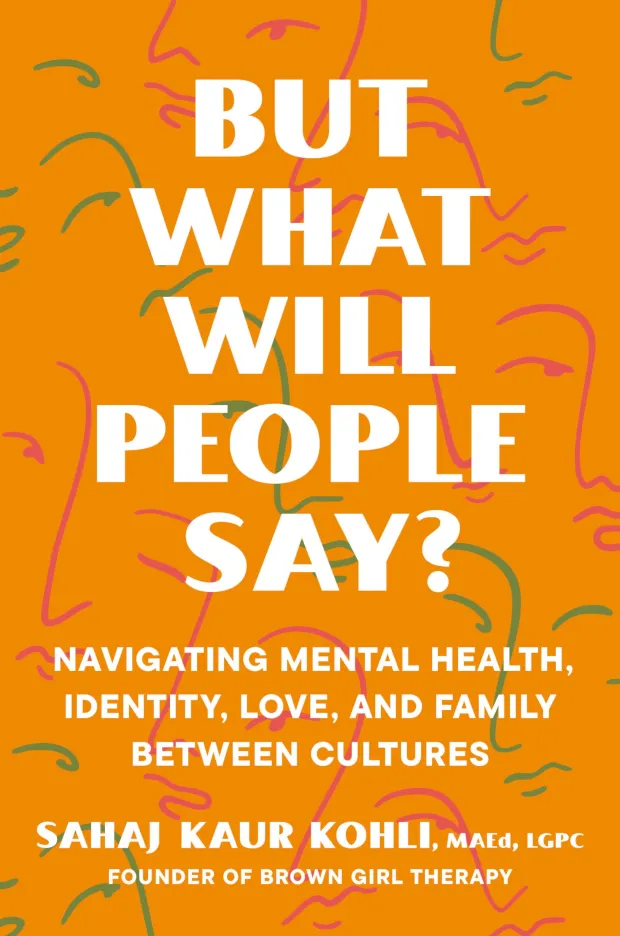

let’s go do a thing!
But What Will People Say? elegantly weaves together personal narrative, anecdotal analysis, and comprehensive research. Sahaj offers advice and tools for everything from navigating generational trauma, guilt, and boundaries, to breaking down stigmas around therapy and celebrating cultural duality. Democratizing and decolonizing the way we think about mental health and self-help, Sahaj’s incredible work is nothing short of a revolution. tldr; mental health, cultural identity, the Asian (American) experience
"But What Will People Say?" by Sahaj Kaur Kohli, MaEd, LGPC Location: TBD Time: TBD
